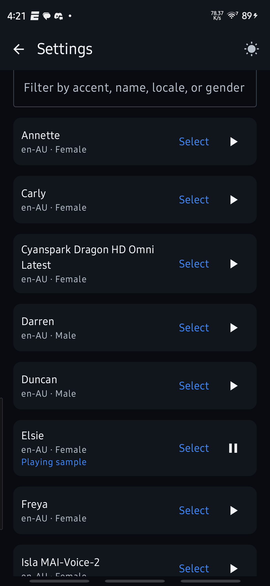

Read and listen, together.
Stream speech with sentence highlighting, tap to seek, adjust playback speed and use a sleep timer.

Your saved articles and documents, ready to read or listen to. Follow along, one sentence at a time.
Personal Android alpha. Public APK: alpha25. This download matches the current source.
The morning opens with a little space to think. A saved article becomes the next thing to explore. One sentence at a time, the ideas begin to connect.
Reading and listening belong together. Keep your place, follow the words, and return when you are ready.


Stream speech with sentence highlighting, tap to seek, adjust playback speed and use a sleep timer.
Keep To read, Up next, playlists and Read history distinct. Configure speech providers or local voice support. MP3 generation is an explicit export.
Explore the optionsYomu is a personal Android app for keeping articles and documents together, then reading them on screen or listening with the current sentence highlighted.
Share an article URL, PDF or Word document to Yomu. Keep saved material in To read, use playlists to group it, and choose what should enter Up next.
Configure a speech provider and select a voice, or use the local voice support available in your build. Normal listening streams speech; generating an MP3 is a separate export action.
Start playback, follow the sentence highlight and tap a sentence to seek. Adjust speed or use a sleep timer. Up next manages the queue; Read history keeps completed material separate.
An Android device and the versioned APK. Online speech requires connectivity and your chosen provider configuration; provider charges and availability are separate. Published alpha14 and current alpha25 source are different release states.
Yomu is an alpha, not a Play Store release. Check the release notes for the features in a particular APK and keep backups before changing builds or devices.
Reading, voice and export optionsPersonal Android alpha. Public APK: alpha25. This download matches the current source.